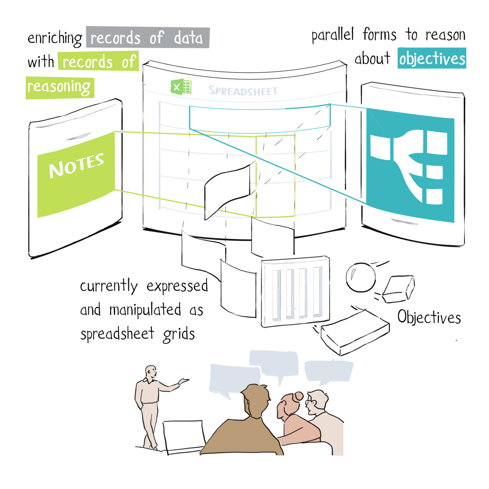
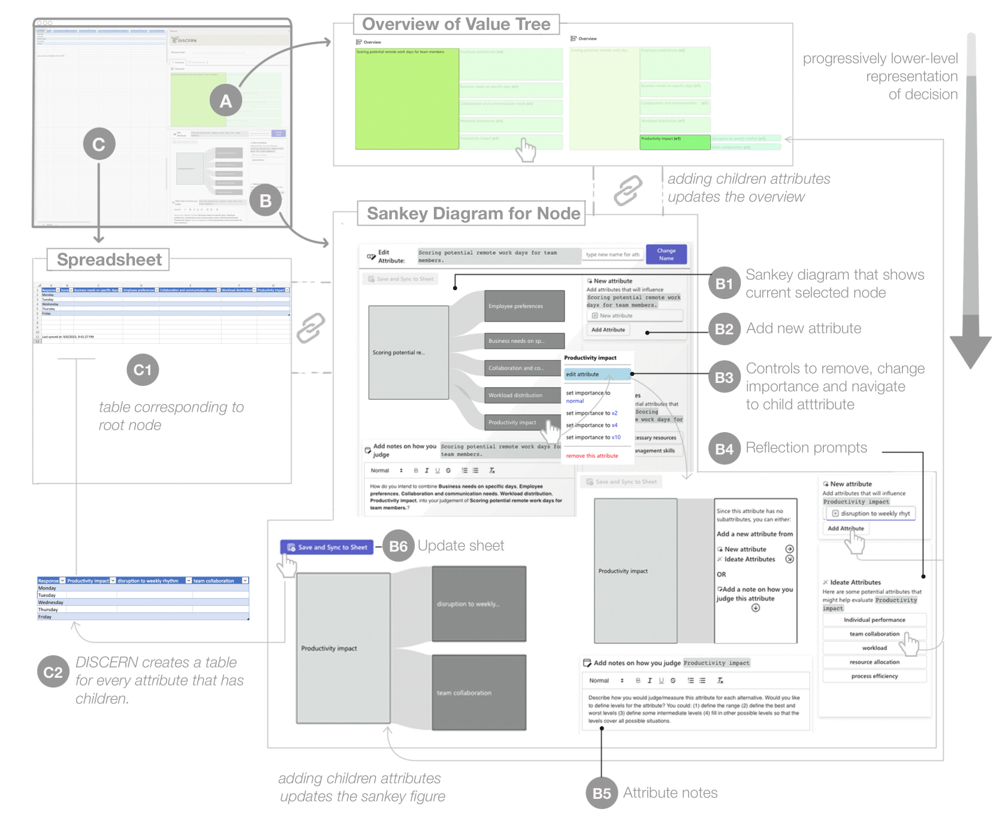

Decision support systems tend to prioritize analytical calculations and optimal answers over subjective judgments. However, human decisions are value-laden, influenced by the decision maker's context and interpersonal relationships. DISCERN was a digital tool to help managers collaboratively reason about decision-making data and objectives.
I worked with Dr. Jina Suh to facilitate a qualitative user enactment study with 4 managers and their hypothetical teams to test how our design probe can support organizational decision-making. I open-coded all 8 user enactment sessions and organized the data into affinity diagrams to collaboratively iterate on themes using reflexive thematic analysis.
The goal of DISCERN was to investigate how value-sensitive digital tools can support decision making in socially situated contexts.
DISCERN was a design probe developed based on formative studies to understand managers' decision-making practices. Semi-structured interviews with 11 managers demonstrated that managers wanted technology to facilitate and not eliminate active listening. Additionally, they used various tools to help externalize their thought, and these changed throughout the decision-making process based on whether they were reasoning about high-level objectives or low-level data. Thus, DISCERN integrated value-tree visualizations within a spreadsheet to accommodate reasoning about both high-level objectives and low-level data.

While DISCERN gave managers a more expressive medium to iterate on decision making, the inherently rigid structure of a spreadsheet prevented managers and their hypothetical teams from collectively exploring alternative solutions. I termed this concept generative compromise, based on the idea of generative dialogue. We contributed implications for designing organizational decision-making tools in a paper under review at the 2024 ACM Conference on Human Factors in Computing Systems (CHI '24).
This project showed me the importance of human relationality and subjectivity in designing collaborative human-AI technology.